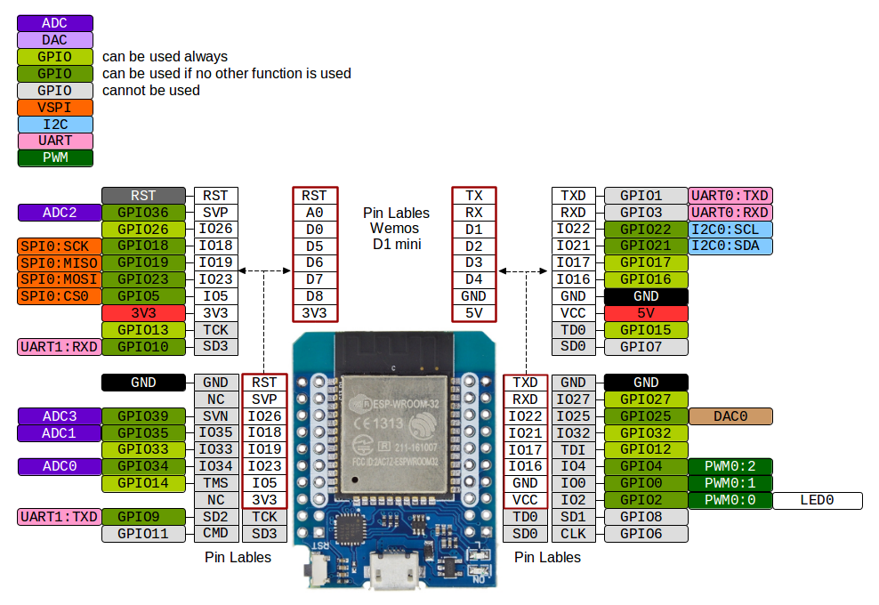

ROS2 Railtrack
Contents:
Railtrack
Demo
Setup environment
Install microROS Agent
Setup nicegui User Interface
Setup network
Setup turnout controller
Setup Marklin Railbox Bridge
Setup linux startup services
ROS2 Railtrack System overview
ROS2 Railtrack
Setup ESP32 pinouts
Bekijk paginabron
Setup ESP32 pinouts
ESP32-wroom32 pinouts:
ESP32-wroom32(mini) pinouts:
